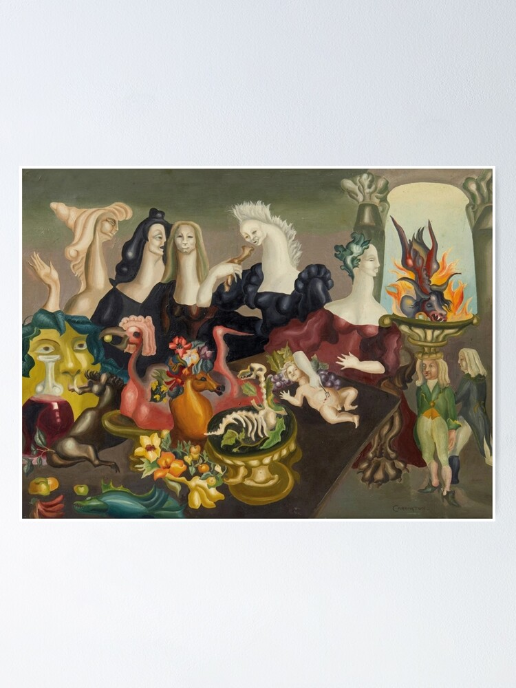
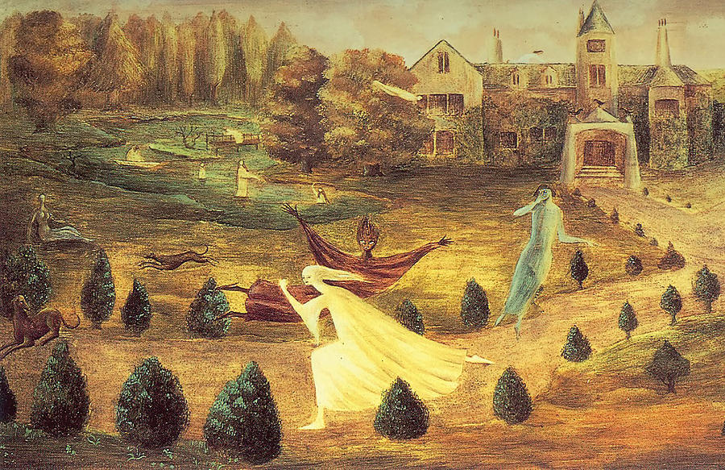

Obras más importantes.
1. The Meal of Lord Candlestick (1938)
“La comida de Lord Candlestick” es una sátira feroz a su infancia en Inglaterra. «Lord Candlestick» era el apodo burlón que Leonora le daba a su padre, un rico industrial textil. En la pintura, vemos un banquete grotesco, donde criaturas híbridas devoran niños, que representa su rechazo a las rígidas normas sociales de la burguesía británica y la opresión patriarcal que sintió en su hogar, el cual terminó abandonando para seguir su camino artístico

2. Autorretrato: La posada del caballo del alba (1937-1938)
Es quizá su obra más icónica de juventud. En este autorretrato, Leonora se presenta con una cabellera salvaje, acompañada de una hiena y un caballo de juguete que flota. La hiena representa su espíritu rebelde y su identificación con lo salvaje, mientras que el caballo es un símbolo de libertad que la acompañaría toda su vida (figuras equinas aparecen recurrentemente a lo largo de su obra).
3. Retrato de Max Ernst (1939)
Una de sus obras más personales y melancólicas. Pintada durante su apasionado y turbulento romance con Max Ernst en Francia. En ella, Max aparece como un chamán con una cola de pez, envuelto en un abrigo de piel roja, mientras un caballo congelado lo observa.
Luego de la invasión nazi a Polonia, el gobierno francés apresó a Ernst, pues lo consideraba peligroso a causa de su nacionalidad alemana. Este evento marcó la separación de la pareja y posterior huida de Leonora hacia España.
4. La dama oval (1942)
Inspirada en un cuento que ella misma escribió, esta obra refleja la metamorfosis y la fragilidad. “Green tea” o “La dama oval” es una pintura que evoca la sensación de encierro y la necesidad de transformación. Muchas veces se asocia con su experiencia de ser «diferente» dentro de su propia familia, pero sobre todo con el encierro en el hospital psiquiátrico en Santander, España. Lugar al que llegó huyendo de la invasión alemana a Francia, país en el que vivió durante un tiempo con el también artista Max Ernst.
5. Down Below (1940)
Esta obra posiblemente es el testimonio visual de su episodio más oscuro: su internamiento en un hospital psiquiátrico en Santander, España. La pintura muestra figuras espectrales en un jardín sombrío, capturando el miedo, la desorientación y el trauma que sufrió tras la detención de Max Ernst y su propio colapso nervioso.
Luego de salir de este lugar, Leonora emprendió el viaje a Nueva York, con ayuda de Renato Leduc, para después establecerse en la Ciudad de México.

6. The House Opposite (1945)
Esta pintura es un laberinto visual de habitaciones y figuras. Puede leerse como una interpretación de la psique humana y, específicamente, el entorno doméstico visto desde una lente surrealista. Refleja su vida en México, donde su casa era un punto de encuentro de artistas y exiliados, pero también un espacio de introspección donde ella exploraba la cocina como un laboratorio alquímico.
A menudo, se vincula la aparición de tres personajes femeninos con las grandes amistades de Leonora: Remedios Varo y la fotógrafa de origen húngaro Kati Horna.
7. La Giganta (1947)
Pintada en México, esta obra refleja su fascinación por la mitología y lo femenino. Se dice que la figura central, una mujer monumental que protege un huevo entre sus manos, simboliza la fertilidad y la protección, pero también la presencia de su amiga y colega Remedios Varo o incluso una representación de la Diosa Madre.
Leonora Carrington transformó el dolor, el exilio y la rebeldía en un lenguaje visual único. Sus cuadros no son solo imágenes bellas, son fragmentos de una vida que se negó a ser domesticada.